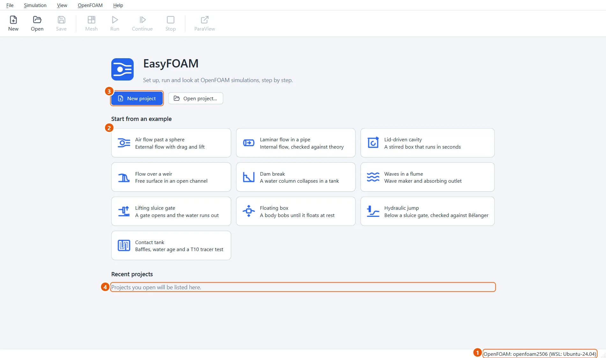
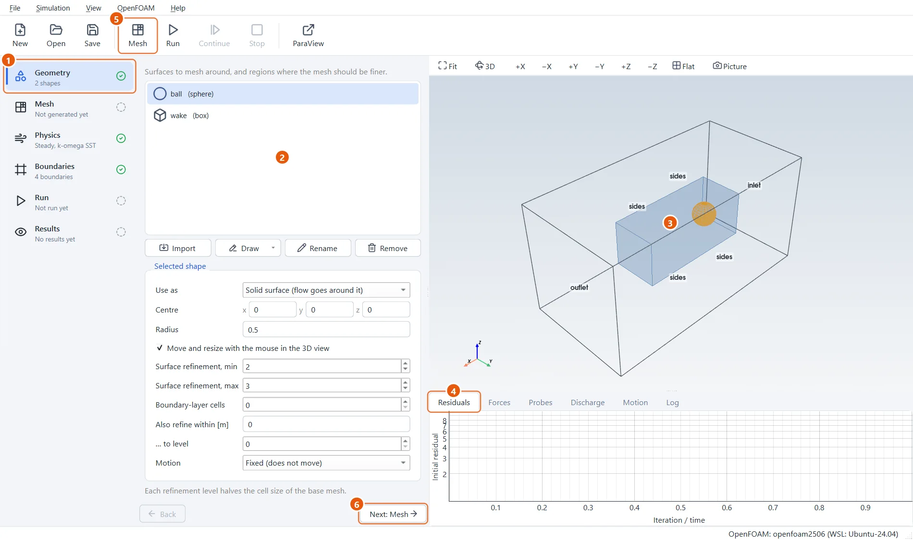

Tutorial 1 of 17
Install and first look
Set up OpenFOAM and EasyFOAM on your computer, start the program and see how it is laid out.
EasyFOAM is a window for OpenFOAM, the free flow solver used across industry and research. EasyFOAM does not contain OpenFOAM: it drives the ordinary OpenFOAM that you install yourself, and it leaves an ordinary OpenFOAM case in your project folder. Nothing is locked in, and there are no limits on the size of a case or the number of processor cores.
So there are two things to install: OpenFOAM, and EasyFOAM itself.
What you will learn
- install OpenFOAM on Windows (inside WSL) or on Linux
- install and start EasyFOAM
- check that EasyFOAM has found OpenFOAM
- find your way round the window
Computer time: none; most of the time goes into downloading OpenFOAM.
1What you need
2Install OpenFOAM
On Windows, OpenFOAM runs inside WSL, the Linux system that Windows provides. Open PowerShell and install Ubuntu:
wsl --install -d Ubuntu-24.04Restart the computer if Windows asks you to, start Ubuntu from the Start menu, and choose a user name and a password when it asks. Then, in the Ubuntu window (or in a terminal on a Linux computer), install OpenFOAM:
curl -s https://dl.openfoam.com/add-debian-repo.sh | sudo bash
sudo apt-get install openfoam2506-defaultThat is all: you do not need to start OpenFOAM yourself. EasyFOAM finds it.
3Install EasyFOAM
Download the EasyFOAM source and open a terminal (PowerShell on Windows) in its folder. Create a private Python environment for it and install EasyFOAM into that:
python -m venv .venv
.venv\Scripts\python -m pip install -e ".[gui]"On Linux the second line starts with .venv/bin/python. To import STEP and IGES files from CAD programs as well, install ".[gui,cad]" instead.
4Start it
On Windows, double-click EasyFOAM.cmd in the EasyFOAM folder. On any system you can also start it from the terminal:
.venv\Scripts\python -m easyfoam.gui.appThe start page appears. Look at the bottom right corner first.
- EasyFOAM has found OpenFOAM. If this says not found, check the installation above, then use OpenFOAM › Search again.
- Ready-made examples. Each has a tutorial on this site.
- New project starts from nothing.
- Projects you have worked on are listed here for quick access.


5The window
Open any example to see the working window; the picture shows Air flow past a sphere. Every case is set up in the same six steps, from top to bottom.
- The steps. Geometry, Mesh, Physics, Boundaries, Run, Results. A green tick means a step is ready; an orange mark means something needs your attention.
- The settings of the step you are on. Hold the mouse over any input for an explanation.
- The 3D view. Left mouse button turns, right button or wheel zooms, middle button moves. The buttons above it set standard views.
- Plots and log. Live plots of the run, and the full output of every tool.
- The toolbar. Mesh (F5) makes the mesh, Run (F6) starts the simulation, Stop ends it and saves first.
- Back and Next walk through the steps.


6What is in a project folder
A project is a folder. EasyFOAM writes one small file of its own into it, and otherwise a normal OpenFOAM case that any OpenFOAM user can read:
my-case/
easyfoam.json everything you chose, in one file
system/ constant/ 0/ the OpenFOAM case, written from your choices
log.blockMesh ... the output of every tool that ran
.easyfoam/mesh.sh the exact commands that were runProjects are saved automatically as you work. To move one to another computer, copy the folder.
7Where to go next
Go on to the lid-driven cavity. It takes a quarter of an hour, needs no geometry and teaches the six steps on a case that runs in seconds. The tutorials after it each add one new idea: flow inside a shape, flow around a body, a free water surface, hydraulic structures, waves, and shapes that move.